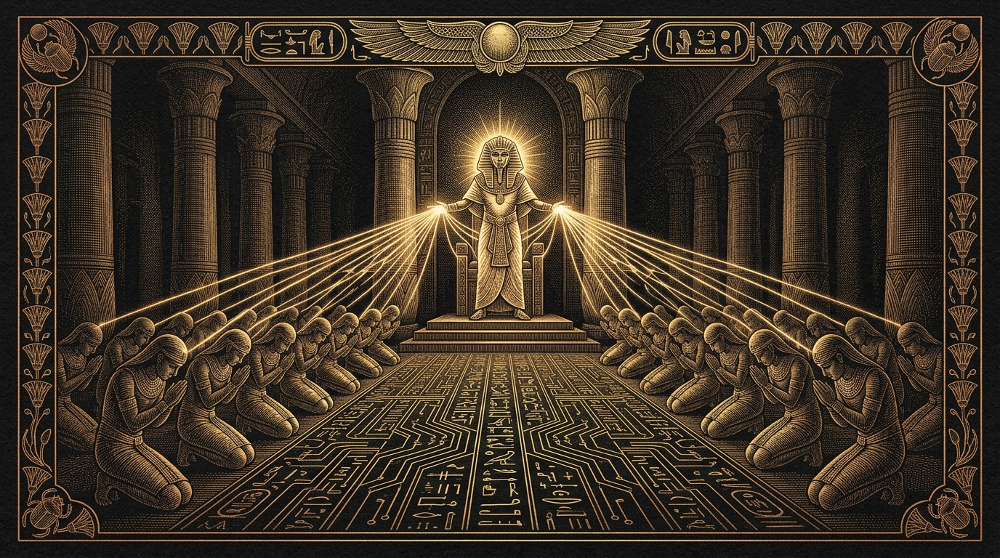

Researcher
Hunts sources, cross-examines claims, returns verified truth with citations.
Chapter I · The Doctrine
A sovereign mind that thinks, and a legion that labors. Two tiers of intelligence — strategy severed from toil — so neither ever tires of the other.
The two minds
Most agents cram planning and execution into one overloaded brain — slow, costly, fragile. ANUBIS splits the soul in two: the Master reasons, delegates and judges; the slaves grind through browsing, writing, coding and filing in parallel.

The legion's sacred orders
Hunts sources, cross-examines claims, returns verified truth with citations.
Drafts documents, decks and reports — Office-native, styled, ready to file.
Browses the living web as a human would — logins, clicks, forms and all.
Writes and repairs code, runs builds, tames errors until tests turn green.
Files artifacts into drives, sheets and systems of record — nothing lost.
Delivers word of progress and completion — mail, chat, webhook or trumpet.
Doctrine understood?